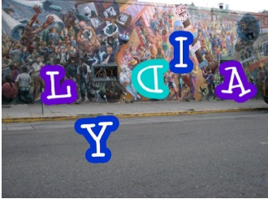
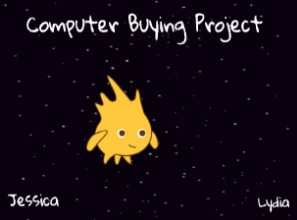
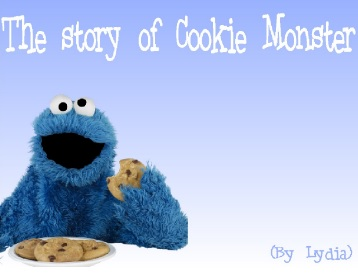

Name Assignment

Description:
Use scratch to design and create a program that shows my name. The requirements were to add a sprite for each letter of my name and give them 3 unique behaviors. The program needed to run when the green flag was clicked and for extra credit, I added a function to reset the scene to the beginning each time the green flag was clicked.
Concepts Learned:
- Using the event blocks - I used the “when green flag is pressed” block so that when it is clicked, the program will run. I also used the “when space key is pressed” so that the sprites will return to their original location when the spacebar is pressed.
- Used loops - I used a forever block so the program will keep running until the stop button is pressed.
- Sprites - I created my own sprites using the sprite editor, I used the library of sprites to find letters in my name and adjusted the costume for each one.
- Movement - I used the x and y values to make my sprites move to their original location when the green flag was clicked, I rotated the sprites so that the behavior of it would be different from the other sprites.
Computer Buying Project

Description:
Scratch was used to present our project to the class. We had to choose 4 different computer options for someone based on their references for computer components. Then, we had to choose the “winning computer”, or which computer best fits their needs and explain why.
- Used loops - I used a forever loop to continue the movement of a sprite until the stop button is clicked.
- Played sounds - When the background switched to a certain scene, we played a certain song until it was done.
- Switching backgrounds - We had the background switch after a sprite was finished doing something or saying something.
- Using the event blocks - The “when green flag is pressed” button was used so the story would initialize on its own. We also used “when background switches to…” for some sprites to give them each a different code.
Final Project

Description:
For my final project, I chose to do a story. The requirements were to have at least 3 different scenes and sprites, 8 think or say boxes, animate the movements of your sprites, and have a title page with your name. The program needed to run when the green flag was clicked.
- Broadcast - I used broadcast for the conversation between sprites and to transition from one background to the next.
- Animate movements of sprites - I programmed the sprites so that when the background switched, the would walk across the screen to the other side.
- Have a conversation between 2 characters - I used broadcast for the conversation; When the other character receives a message, it will respond to it by saying something.
- Title scene - I created my own title scene by starting off with a white background, and then changing the color of it and adding pictures and text.